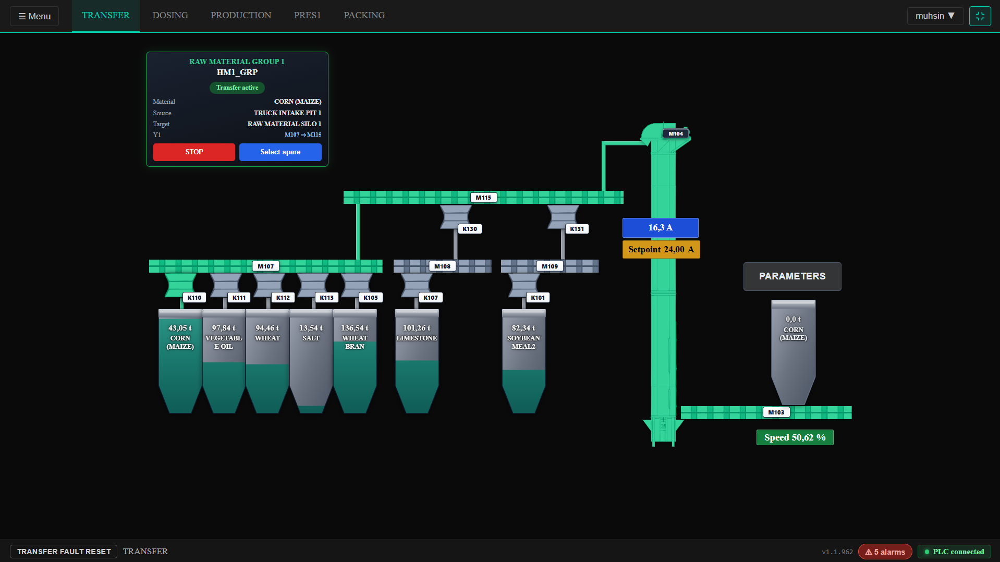
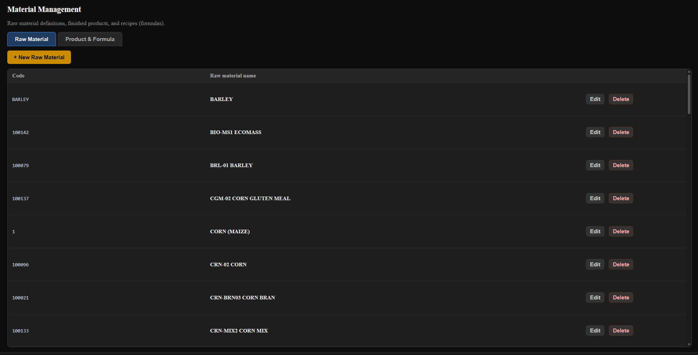
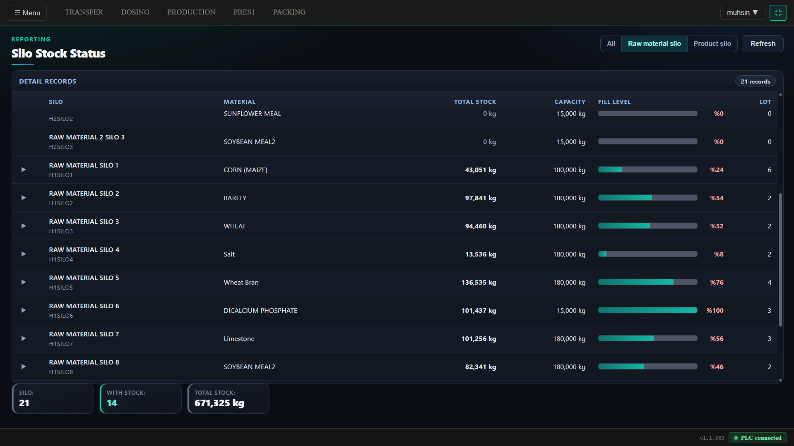
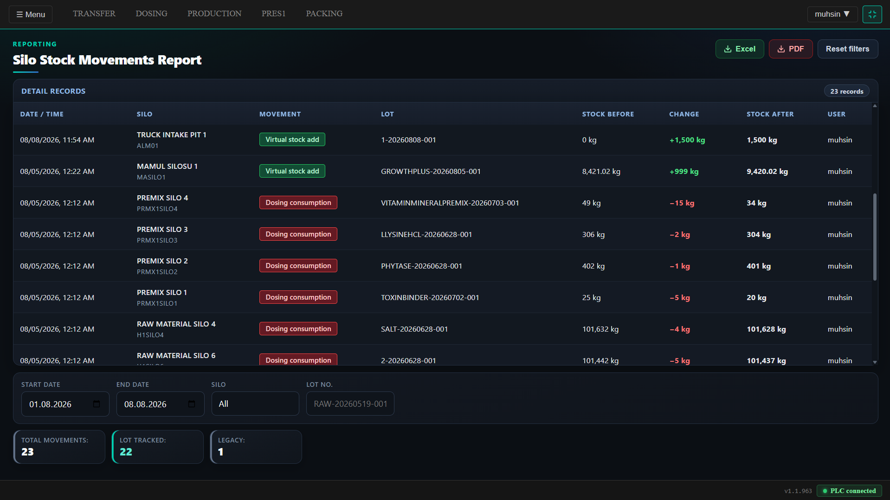
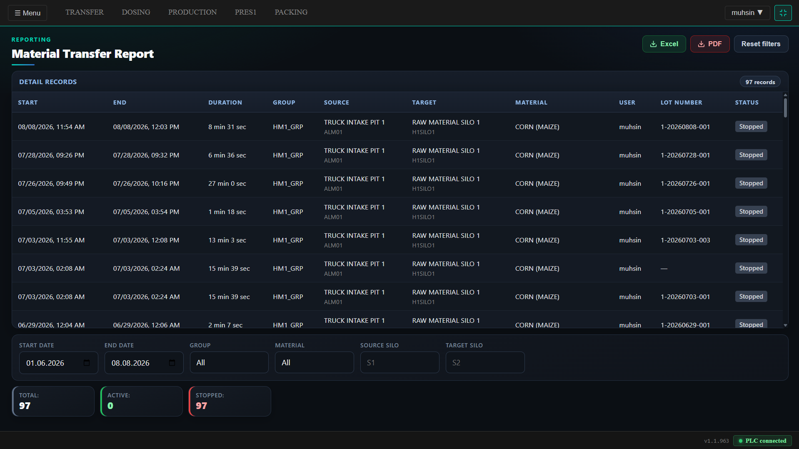

Hammadde Alım, Stok & İzleme
Kamyondan siloya kadar hammaddenin takibi. Operatör canlı ekrandan yönetir; her hareket lot ve kullanıcıyla kayda geçer. Sorun veya geri çağırma anında “hangi parti, nereden geldi?” sorusuna hızlı cevap bulunur.

Hammadde Transfer Sayfası
Kamyon alım çukurundan hammadde silosuna transferi canlı izlersiniz. Kaynak–hedef, malzeme, aktif rota ve motor akımları tek ekranda; yeşil hat çalışan hattı gösterir, STOP ile anında durdurursunuz.

Hammadde Tanımları
Fabrikada kullanılan hammaddeleri (mısır, soya, tuz vb.) sisteme kod ve isimle kaydedersiniz. Siloya malzeme atarken, stok eklerken ve dozajda tüketirken hep bu listeden seçilir; lot numarası da bu koda göre oluşur.

Silo Stok Durumu
Her siloda ne kadar malzeme var, kapasite ne, doluluk yüzde kaç, kaç ayrı lot duruyor — tablo ve doluluk çubuğuyla tek bakışta görülür. Hammadde / mamül filtresiyle listeyi daraltabilirsiniz.

Silo Stok Hareketleri
Stoka ekleme, transfer veya dozaj tüketimi olduğunda sistem kg değişimini yazar: hangi silo, hangi lot, önce/sonra stok, kim yaptı. Tarih veya lot ile süzebilir, Excel / PDF alabilirsiniz.

Hammadde Transfer Raporu
Tamamlanan ve devam eden transferlerin listesi: başlangıç–bitiş, süre, kaynak / hedef silo, malzeme, operatör ve lot numarası. “Bugün çukurdan hangi siloya ne aktı?” sorusu bu ekrandan cevaplanır.

Lot Raporu — Kullanılan Hammaddeler
Bitmiş ürün lotunu açınca içine giren her hammadde lotu, çekildiği silo, tedarik / kayıt bilgisi ve tüketilen kg listelenir. Şikayet veya geri çağırmada parti kaynağına buradan inilir.